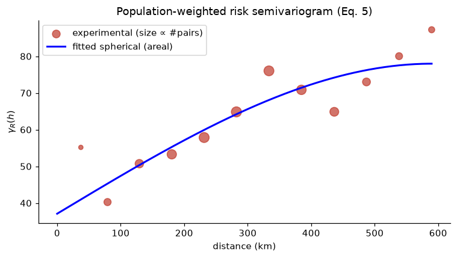
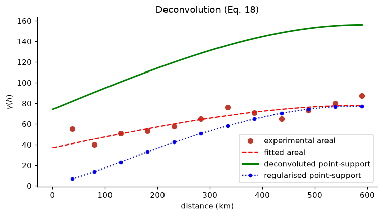
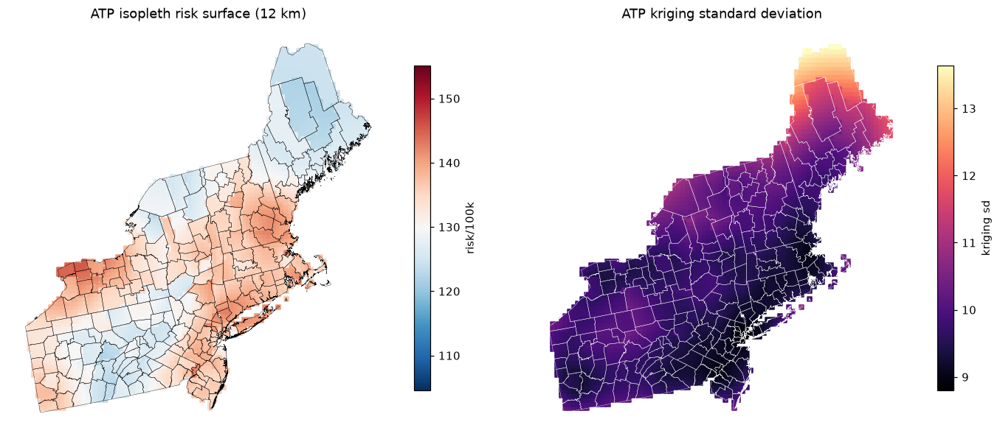
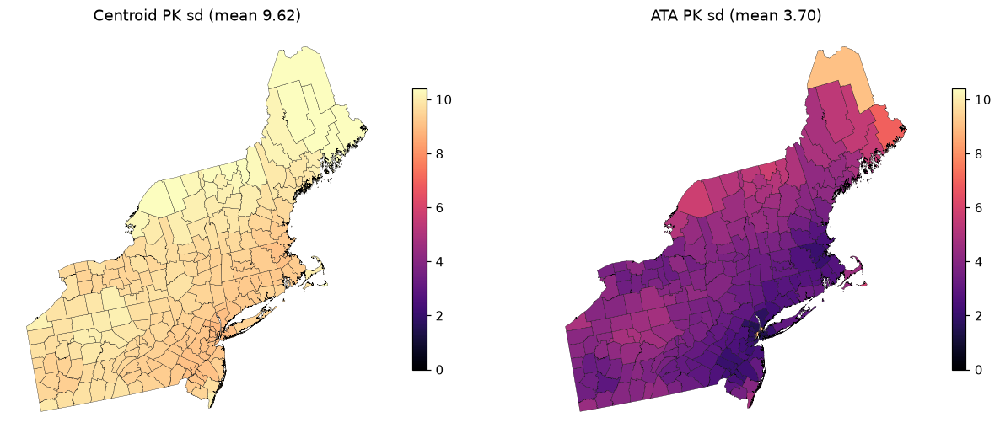
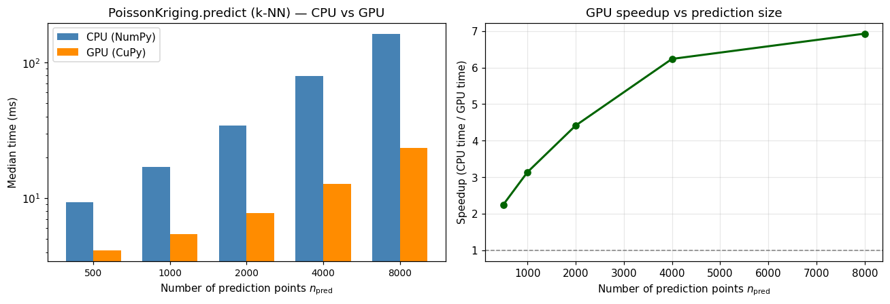

Poisson kriging interpolates an areal rate\(z(v)=d(v)/n(v)\) while respecting that \(d\) is a Poisson count over a population at risk \(n\). A county with a few thousand residents produces a far noisier rate than one with a million, even if their true underlying risk \(R\) is the same (the small-number problem). Ordinary kriging of the raw rate ignores this and lets small, noisy counties distort the map.
Goovaerts (2006) gives three Poisson-kriging estimators that fold \(\mathrm{Var}(z)\propto 1/n\) into the kriging diagonal:
Estimator
Support
What it produces
Centroid PK
point \(\to\) point
risk at county centroids
Area-to-area (ATA)
area \(\to\) area
risk for each county polygon
Area-to-point (ATP)
area \(\to\) point
a continuous isopleth surface
pygstat.poisson_kriging implements all three. This notebook supplies the surrounding variogram inference (population-weighted risk semivariogram and deconvolution to point support), loads the Northeastern-US breast-cancer mortality data, runs the three estimators, and checks the ATP coherence constraint.
Step
What we do
Data
217 county polygons + 5,419 census points; build PointSupport per county
Invert regularisation to a point-support model (Eq. 18)
Mapping
Leave-one-out centroid and ATA maps; ATP on a 12 km grid
Check
Population-weighted ATP average equals ATA (Eq. 15, machine precision)
CPU / GPU
Time k-NN PoissonKriging.predict on CPU vs GPU using USA diabetes counties (usa_diabetes_data.csv + US_COUNTY.shp, \(n=3{,}107\))
By the end you will have leave-one-out centroid and ATA maps, an ATP isopleth that satisfies the coherence constraint, and a CPU vs GPU timing of the batched k-NN centroid solve on the national diabetes county set.
2. Theory - Poisson Risk and the Small-Number Problem
Let \(v_\alpha\) be a county with population \(n(v_\alpha)\) and observed count \(d(v_\alpha)\). The latent risk\(R\) is the intensity of a Poisson count,
The Poisson-kriging system is ordinary kriging of \(z\) for \(R\), with that population-dependent variance added to the diagonal so small-population areas are automatically down-weighted. rate_base (\(B\)) is auto-detected from the rate magnitude; without it the penalty is \(\sim 10^5\times\) too small and ATA/ATP become unstable.
3. Theory - Centroid, ATA, and ATP Estimators
All three estimators are linear, \(\hat R=\sum_i\lambda_i z_i\), with a population penalty on the kriging diagonal and the unbiasedness constraint \(\sum_i\lambda_i=1\).
Centroid (Goovaerts 2006, Eq. 3). Areas are collapsed to population-weighted centroids \(\mathbf{u}_i\). The system is
This is AreaPoissonKriging.predict_area. Change of support usually shrinks the kriging variance relative to the centroid estimator.
Area-to-point (Eq. 13–14). Same left-hand side as ATA; the right-hand side uses area-to-point covariances \(\bar C_R(v_i,\mathbf{u}_s)\). Solving at every grid node produces a continuous isopleth (AreaPoissonKriging.predict_points).
Coherence (Eq. 15). The population-weighted average of ATP estimates inside a county must recover the ATA estimate for that county:
Distances between counties use the population-weighted distance (Eq. 1) between their census-point clouds, not the Euclidean distance between centroids.
Deconvolution (Eq. 18). ATA/ATP need the point-support model. Regularisation relates areal and point semivariograms by
We invert this iteratively, reusing the module’s block-semivariance helpers (_weighted_semivariance, _within_support_semivariance) so the regularisation is consistent with the kriging engine. The result is a point-support model with a higher sill than the areal one — the extra variance that change of support had averaged away.
5. Python Setup
5.1 CPU and GPU
PoissonKriging.predict solves a local Poisson-kriging system at every prediction point. In k-nearest-neighbor mode every point has the same neighbor count \(k\), so pygstat stacks the systems into one (n_{\mathrm{pred}}, k+1, k+1) batched xp.linalg.solve — NumPy on CPU, CuPy on GPU. Pass use_gpu='auto'|True|False.
Argument / method
What it controls
use_gpu
Batched k-NN centroid Poisson-kriging solve (NumPy or CuPy).
predict_id
Leave-one-out of a single area; stays on CPU.
AreaPoissonKriging
ATA / ATP block covariances; stays on CPU.
use_gpu is:
Value
Behaviour
'auto' (default)
GPU when CuPy can run a kernel on this card. Falls back to CPU otherwise.
True
Force GPU. Warns and falls back to CPU if CuPy is missing or cannot run a kernel.
False
Always CPU (NumPy/SciPy).
This notebook probes the GPU once with cupy_gpu_usable() and stores the result in USE_GPU. The Northeastern-US cancer maps in §11–14 use predict_id / ATA / ATP (CPU). §15 times the k-NN GPU path on USA county diabetes (\(n = 3{,}107\)).
Install CuPy with pip install pygstat[gpu] (CUDA 11) or pip install cupy-cuda12x for CUDA 12.
Code
%matplotlib inlineimport sys, os, warningswarnings.filterwarnings("ignore")sys.path.insert(0, os.path.abspath("../src"))import numpy as npimport pandas as pdimport geopandas as gpdimport matplotlib.pyplot as pltfrom matplotlib.colors import Normalizefrom shapely.geometry import Pointfrom scipy.spatial.distance import cdistfrom scipy.optimize import least_squares# --- Poisson kriging engine ---import pygstatfrom pygstat import poisson_kriging as pkfrom pygstat.poisson_kriging import ( PoissonKriging, AreaPoissonKriging, PointSupport, _weighted_semivariance as wgamma, _within_support_semivariance as within_gamma, _detect_rate_base,)plt.rcParams.update({"figure.dpi":110, "font.size":10,"axes.spines.top":False, "axes.spines.right":False})np.set_printoptions(suppress=True)print("geopandas", gpd.__version__)print("pygstat version:", pygstat.__version__)from pygstat import Variogramfrom pygstat.utils.backend import CUPY_AVAILABLE, cupy_gpu_usable# ── Poisson k-NN batched solve: CPU / GPU dispatch (CuPy) ──────────────────────# cupy_gpu_usable() runs a real kernel (not just `import cupy`). Older cards can# import CuPy and still fail at compile time; those stay on CPU.USE_GPU = cupy_gpu_usable()if USE_GPU:import cupy as cpprint(f"CuPy : {cp.__version__}")try: name = cp.cuda.runtime.getDeviceProperties(0)["name"]ifisinstance(name, bytes): name = name.decode()print(f"GPU (CuPy) : {name}")exceptException:print("GPU (CuPy) : available")print("Backend : GPU (CuPy) — PoissonKriging k-NN batched solve on GPU")else:if CUPY_AVAILABLE:import cupy as cpprint(f"CuPy : {cp.__version__} (installed, but cannot run a kernel on this GPU/CUDA setup)")else:print("CuPy : not installed (pip install pygstat[gpu] or cupy-cuda12x)")print("Backend : CPU (NumPy)")print(f"use_gpu : {USE_GPU}")
217 county polygons (FIPS, age-adjusted rate per 100,000) and 5,419 census population points (POP10). A rate from a small population is noisy, so each county needs its point support and total population. Points are assigned to counties by a within join, with stragglers snapped to the nearest county; PointSupport then groups them.
AreaPoissonKriging / PoissonKriging expect a variogram with fitted_params = [nugget, partial_sill, range] that is callable as variogram(h) → γ(h). We supply this small VariogramModel; the range is capped at the largest lag so it cannot rail past the domain.
Code
def _spherical(h, n, ps_, r): h = np.asarray(h, float); g = np.where(h <= r, ps_*(1.5*h/r -0.5*(h/r)**3), ps_)return n + np.where(h ==0, 0.0, g)def _exponential(h, n, ps_, r): h = np.asarray(h, float);return n + np.where(h ==0, 0.0, ps_*(1-np.exp(-3*h/r)))_MODELS = {"spherical":_spherical, "exponential":_exponential}class VariogramModel:"""Callable gamma(h) with fitted_params = [nugget, psill, range]."""def__init__(self, model="spherical", nugget=0.0, psill=1.0, rng=1.0):self.model = model;self.fitted_params = [nugget, psill, rng]def__call__(self, h):return _MODELS[self.model](h, *self.fitted_params)@propertydef sill(self):returnself.fitted_params[0] +self.fitted_params[1]def fit(self, lags, gamma, weights=None): lags, gamma = np.asarray(lags, float), np.asarray(gamma, float) w = np.ones_like(gamma) if weights isNoneelse np.asarray(weights, float) s0 = gamma.max()def resid(p):return (_MODELS[self.model](lags, *p) - gamma)*np.sqrt(w) sol = least_squares(resid, [gamma.min(), s0, lags[len(lags)//2]], bounds=([0,0,lags.min()], [s0, 3*s0, lags.max()]))self.fitted_params =list(sol.x);returnself
9. Population-Weighted Distance and Risk Semivariogram
The Monestiez/Goovaerts estimator down-weights unreliable pairs and removes the Poisson noise variance (Eq. 5). Distances are the population-weighted distances of Eq. 1.
areal risk model: nugget=37.1 sill=78.0 range=590 km

10. Deconvolution to Point Support
ATA/ATP need the point-support model. We invert \(\gamma_v(h)=\bar\gamma(v,v_h)-\bar\gamma_h(v,v)\) iteratively, reusing the module’s own block-semivariance helpers so the regularisation is consistent with the kriging engine.
Code
def regularize(vg_pt, ps, ids, centd, lags, lag_tol):"""Regularise a point-support model to a theoretical areal gamma_v(h) (Eq. 18).""" within = np.array([within_gamma(vg_pt, ps.coords(int(b)), ps.values(int(b))) for b in ids]) iu = np.triu_indices(len(ids), 1) gv = np.full(len(lags), np.nan)for li, h inenumerate(lags): m = (centd[iu] > h-lag_tol) & (centd[iu] <= h+lag_tol) ii, jj = iu[0][m], iu[1][m]iflen(ii) <3: continue vals = [wgamma(vg_pt, ps.coords(int(ids[a])), ps.values(int(ids[a])), ps.coords(int(ids[b])), ps.values(int(ids[b]))) -0.5*(within[a]+within[b])for a, b inzip(ii, jj)] gv[li] = np.mean(vals)return gvdef deconvolute(vg_area, ps, ids, centd, lags, exp_gamma, lag_tol, max_iter=12, tol=0.01): vg_pt = VariogramModel(vg_area.model, *vg_area.fitted_params) reg = regularize(vg_pt, ps, ids, centd, lags, lag_tol) good = np.isfinite(reg) & np.isfinite(exp_gamma) dev =lambda a, b: np.mean(np.abs(a-b)/np.where(b>0, b, 1)) bestD, hist = dev(reg[good], exp_gamma[good]), [] best = vg_pt; hist.append(bestD)for _ inrange(max_iter): r = np.where((reg >0) & np.isfinite(reg), exp_gamma/reg, 1.0) s =float(np.clip(np.nanmean(r), 0.5, 2.0)) n, psl, rng = best.fitted_params cand = VariogramModel(best.model, n*s, psl*s, rng) reg2 = regularize(cand, ps, ids, centd, lags, lag_tol) g2 = np.isfinite(reg2) & np.isfinite(exp_gamma) D = dev(reg2[g2], exp_gamma[g2]); hist.append(D)if D < bestD: best, bestD, reg = cand, D, reg2iflen(hist) >3andabs(hist[-2]-hist[-1]) < tol*hist[0]: breakreturn best, bestD, histcentd = cdist(cent, cent)lag_tol = (lags[1]-lags[0])/2vg_pt, Dstat, hist = deconvolute(vg_area, ps, fips, centd, lags, gam, lag_tol)reg_final = regularize(vg_pt, ps, fips, centd, lags, lag_tol)print(f"point-support model: nugget={vg_pt.fitted_params[0]:.1f} sill={vg_pt.sill:.1f} "f"range={vg_pt.fitted_params[2]/1000:.0f} km (D={Dstat:.3f}, {len(hist)} iters)")print(f"areal sill={vg_area.sill:.1f} -> point-support sill={vg_pt.sill:.1f} (higher, as expected)")fig, ax = plt.subplots(figsize=(7,4))ax.scatter(lags/1000, gam, s=40, c="#c0392b", label="experimental areal")ax.plot(hh/1000, vg_area(hh), "r--", lw=1.5, label="fitted areal")ax.plot(hh/1000, vg_pt(hh), "g-", lw=2, label="deconvoluted point-support")ax.plot(lags/1000, reg_final, "b:o", ms=4, lw=1.5, label="regularised point-support")ax.set_xlabel("distance (km)"); ax.set_ylabel(r"$\gamma(h)$")ax.set_title("Deconvolution (Eq. 18)"); ax.legend(); plt.tight_layout(); plt.show()
point-support model: nugget=74.2 sill=156.0 range=590 km (D=0.294, 4 iters)
areal sill=78.0 -> point-support sill=156.0 (higher, as expected)

11. Run the Three Estimators
We pass the deconvoluted point-support model and let rate_base auto-detect. Centroid and ATA run leave-one-out (each county predicted from the others) so predictions can be scored against observed rates.
Code
K =16pk_cent = PoissonKriging(vg_pt).fit(cent, rates, pops, ids=fips) # module classapk = AreaPoissonKriging(vg_pt).fit(ps, pd.Series(rates, index=fips)) # module classprint(f"auto-detected rate_base: centroid={pk_cent.rate_base:.0f} area={apk.rate_base:.0f}")cpk = [pk_cent.predict_id(int(f), number_of_neighbors=K) for f in fips]ata = [apk.predict_area(int(f), number_of_neighbors=K) for f in fips]zc = np.array([r["zhat"] for r in cpk]); sc = np.array([r["sig"] for r in cpk])za = np.array([r["zhat"] for r in ata]); sa = np.array([r["sig"] for r in ata])areas["z_centroid"], areas["s_centroid"] = zc, scareas["z_ata"], areas["s_ata"] = za, sadef st(z): return (z-rates).mean(), np.abs(z-rates).mean(), z.var()pd.DataFrame({"ME": [np.nan, st(zc)[0], st(za)[0]],"MAE": [np.nan, st(zc)[1], st(za)[1]],"variance": [rates.var(), zc.var(), za.var()],"mean kriging sd": [np.nan, np.nanmean(sc), np.nanmean(sa)],}, index=["raw rates","Centroid PK","ATA PK"]).round(3)
Centroid and ATA agree on the risk (similar ME/MAE), but ATA’s kriging standard deviation is far smaller — the change-of-support pay-off of respecting each county’s area and population. Both are much smoother than the raw map.
predict_points accepts arbitrary targets, so we evaluate ATP on a 12 km grid. Each node inherits the block-kriging system of its containing county (only the area-to-point RHS is recomputed), giving a continuous isopleth surface.
ATP surface: 2988 nodes | risk 121.5–145.6 | variance 29.5 (ATA 24.3, less smoothed)

13. Coherence Constraint
With the module’s corrected ATP, the population-weighted average of a county’s point estimates equals its ATA estimate — verified to machine precision (Eq. 15).
Code
rows = []for fid in fips[:8]: a = apk.predict_area(int(fid), number_of_neighbors=K) pp = apk.predict_points(int(fid), number_of_neighbors=K) # county's own support points wavg = np.sum(pp.zhat*pp.population)/pp.population.sum() rows.append([int(fid), a["zhat"], wavg, abs(a["zhat"]-wavg), len(pp)])coh = pd.DataFrame(rows, columns=["FIPS","ATA estimate","pop-wtd avg of ATP","abs diff","# points"])print("max coherence error:", f"{coh['abs diff'].max():.2e}")coh.round(4)
max coherence error: 5.68e-14
FIPS
ATA estimate
pop-wtd avg of ATP
abs diff
# points
0
25019
140.0914
140.0914
0.0
8
1
36121
140.7116
140.7116
0.0
18
2
33001
140.7006
140.7006
0.0
15
3
25007
138.7217
138.7217
0.0
17
4
25001
135.2036
135.2036
0.0
38
5
33013
140.7808
140.7808
0.0
26
6
9007
137.6608
137.6608
0.0
14
7
25021
133.1922
133.1922
0.0
13
14. Kriging-Variance Comparison
Code
fig, ax = plt.subplots(1, 2, figsize=(12, 4.8))smax = np.nanpercentile(np.r_[sc, sa], 98)areas.plot("s_centroid", cmap="magma", ax=ax[0], vmin=0, vmax=smax, edgecolor="k", linewidth=.2, legend=True, legend_kwds={"shrink":.7})ax[0].set_title(f"Centroid PK sd (mean {np.nanmean(sc):.2f})")areas.plot("s_ata", cmap="magma", ax=ax[1], vmin=0, vmax=smax, edgecolor="k", linewidth=.2, legend=True, legend_kwds={"shrink":.7})ax[1].set_title(f"ATA PK sd (mean {np.nanmean(sa):.2f})")for a in ax: a.set_axis_off()plt.tight_layout(); plt.show()print("Summary")print(f" raw-rate variance ......... {rates.var():8.2f}")print(f" Centroid PK variance ...... {zc.var():8.2f} ({100*zc.var()/rates.var():.0f}% of raw)")print(f" ATA PK variance ........... {za.var():8.2f} ({100*za.var()/rates.var():.0f}% of raw)")print(f" ATP surface variance ...... {atp.zhat.var():8.2f} (less smoothed than ATA)")print(f" mean sd centroid / ATA ... {np.nanmean(sc):.2f} / {np.nanmean(sa):.2f}")print(f" max coherence error ....... {coh['abs diff'].max():.1e}")

Summary
raw-rate variance ......... 171.27
Centroid PK variance ...... 23.83 (14% of raw)
ATA PK variance ........... 24.33 (14% of raw)
ATP surface variance ...... 29.54 (less smoothed than ATA)
mean sd centroid / ATA ... 9.62 / 3.70
max coherence error ....... 5.7e-14
15. CPU vs GPU Poisson Kriging Timing
The 217-county Northeastern-US cancer set is too small for a GPU comparison: the batched Poisson-kriging solve is a stack of tiny \((k+1)\times(k+1)\) systems, and host→device copies dominate. Here we time k-nearest-neighbor centroid Poisson kriging (PoissonKriging.predict) on CPU (use_gpu=False) versus GPU (use_gpu=True) using USA county diabetes prevalence.
Data:
Join data/usa_diabetes_data.csv (3,107 counties) to data/US_COUNTY.shp on FIPS. Coordinates are NAD 1983 Albers metres (same CRS as the polygons).
The target is the county diabetes percentage (Diabetes_per); population support is POP_Total. rate_base=100 because the rate is a percentage.
Fit one exponential pygstat.Variogram on the 3,107 centroids (fitting \(\gamma\) is not in the times). Draw a separate prediction set in the county bounding box.
Unlike global ordinary kriging, Poisson kriging’s GPU work scales with \(n_{\mathrm{pred}}\) (one stacked solve of shape (n_pred, k+1, k+1)), not \(n_{\mathrm{train}}^3\). Training size is therefore held at 3,107 and we vary \(n_{\mathrm{pred}}\). Neighborhood size is \(k=16\), the same \(K\) as §11.
Each timing is the median of three fit + predict calls after a short GPU warmup so CUDA kernel compilation is not counted. If CuPy cannot run a kernel here, the GPU column is skipped. ATA / ATP are not timed: block-to-block covariances are not a fixed-\(k\) stack.
USA county diabetes (centroid Poisson kriging)
counties : 3,107 joined on FIPS (usa_diabetes_data.csv + US_COUNTY.shp)
rate : Diabetes_per [3.84, 16.96] %
population : POP_Total [150, 10077819]
variogram : exponential nugget=1.4023 partial sill=1.2185 range=613.1 km
CRS : NAD 1983 Albers (metres)
GPU usable : True
Repeats : 3 (median wall time of PK fit + predict, k-NN)
n_train : 3107 (USA diabetes counties)
n_pred : [500, 1000, 2000, 4000, 8000] (random locations in the US_COUNTY bbox)
neighbors : 16; rate_base=100 (percentage)
dataset n_train n_pred CPU (ms) GPU (ms) speedup match
USA diabetes 3107 500 9.3 4.1 2.25× True
USA diabetes 3107 1000 17.1 5.4 3.13× True
USA diabetes 3107 2000 34.3 7.8 4.41× True
USA diabetes 3107 4000 79.7 12.8 6.24× True
USA diabetes 3107 8000 163.2 23.6 6.93× True

Predictions and kriging standard errors from the two backends should match (match = True). The GPU speedup comes from the batched \((n_{\mathrm{pred}}, k+1, k+1)\) Poisson-kriging solve, not from the county join or the variogram fit (those run once on CPU and are excluded from the times). Small \(n_{\mathrm{pred}}\) can show little GPU gain because kernel-launch overhead dominates; as the prediction set grows the stacked solve keeps the GPU several times faster. Use use_gpu=USE_GPU so the same cells run on a laptop CPU or a CUDA workstation without edits. ATA / ATP stay on CPU.
16. Summary and Conclusions
Poisson kriging estimates the latent risk \(R\) behind an areal rate \(z=B\,d/n\) by adding a population-dependent variance to the ordinary-kriging diagonal. Small-population counties are down-weighted instead of being allowed to distort the map.
pygstat.poisson_kriging implements three supports: centroid (PoissonKriging), area-to-area, and area-to-point (AreaPoissonKriging), with PointSupport grouping census points by county.
On Northeastern-US breast-cancer mortality, deconvolution recovers a point-support model with a higher sill than the areal model. Centroid and ATA predict very similar risk, but ATA reports markedly smaller uncertainty.
ATP yields a smooth continuous surface, less over-smoothed than ATA, and satisfies the coherence constraint to machine precision.
rate_base auto-detects to \(10^5\); the correctly scaled Poisson diagonal is what keeps ATA/ATP stable.
CPU / GPU. k-NN centroid Poisson kriging (PoissonKriging.predict, use_gpu=USE_GPU) was timed on USA county diabetes (3,107 counties joined to US_COUNTY.shp). The GPU batched (n_pred, k+1, k+1) solve is the accelerated step; predict_id and ATA/ATP stay on CPU.
Object
Role in this notebook
PoissonKriging
centroid-based Poisson kriging (Eq. 2–4); use_gpu for batched k-NN predict
Webster, R. & Oliver, M.A. (2007). Geostatistics for Environmental Scientists (2nd ed.). Wiley.
Practical variogram fitting
Key papers
Paper
Contribution
Goovaerts, P. (2006). Geostatistical analysis of disease data: accounting for spatial support and population density in the isopleth mapping of cancer mortality risk using area-to-point Poisson kriging. Int. J. Health Geographics 5:52.
Centroid, ATA, and ATP Poisson kriging
Monestiez, P., Dubroca, L., Bonnin, E., Durbec, J.P. & Guinet, C. (2006). Geostatistical modelling of spatial uncertainty using Poisson kriging. Ecological Modelling 194, 233–243.
Population-weighted risk semivariogram
Goovaerts, P. (2008). Kriging and semivariogram deconvolution in the presence of irregular geographical units. Mathematical Geosciences 40, 101–128.
Areal-to-point deconvolution
In this library
Object
Role
pygstat.PoissonKriging
centroid-based Poisson kriging (use_gpu for batched k-NN predict)